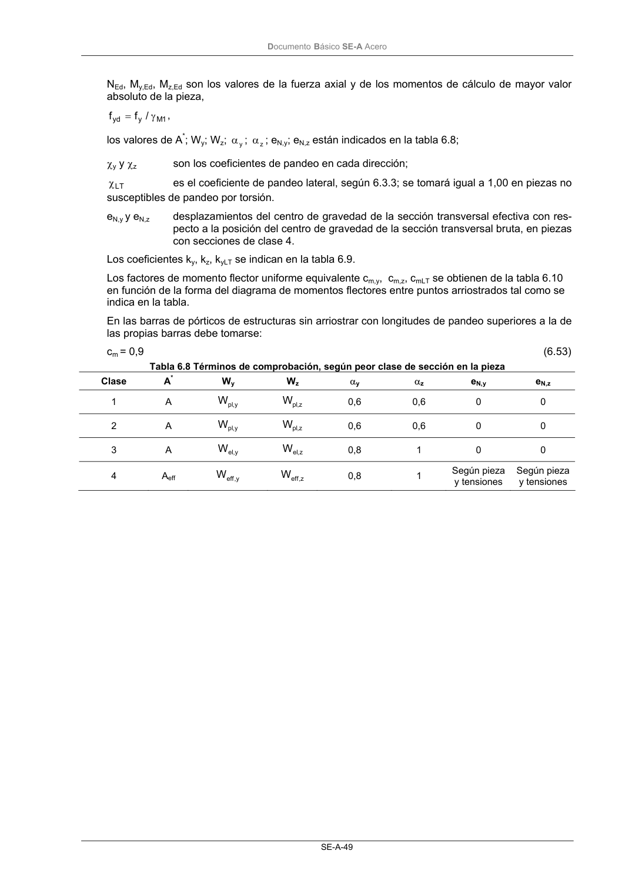

DB-SE-A Acero · edición 2007-10-23 · capa oficial
Documento DB-SE-A-oficial · SHA-256 del PDF 9ed9ea694aabfbda3bfbbef40dfe9223fde05d13c35bc2ba9751e5a96a22a64f
Página física 51 de 168.
Copia fiel del PDF fuente · Fuente oficial
Ficha de la disposición en la fuente oficial
Formato: Texto de la página (Markdown)
Documento Básico SE-A Acero SE-A-49 NEd, My,Ed, Mz,Ed son los valores de la fuerza axial y de los momentos de cálculo de mayor valor absoluto de la pieza, 1 M y yd / f f γ = , los valores de A*; Wy; Wz; y α ; z α ; eN,y; eN,z están indicados en la tabla 6.8; χy y χz son los coeficientes de pandeo en cada dirección; LT χ es el coeficiente de pandeo lateral, según 6.3.3; se tomará igual a 1,00 en piezas no susceptibles de pandeo por torsión. eN,y y eN,z desplazamientos del centro de gravedad de la sección transversal efectiva con res- pecto a la posición del centro de gravedad de la sección transversal bruta, en piezas con secciones de clase 4. Los coeficientes ky, kz, kyLT se indican en la tabla 6.9. Los factores de momento flector uniforme equivalente cm,y, cm,z, cmLT se obtienen de la tabla 6.10 en función de la forma del diagrama de momentos flectores entre puntos arriostrados tal como se indica en la tabla. En las barras de pórticos de estructuras sin arriostrar con longitudes de pandeo superiores a la de las propias barras debe tomarse: cm = 0,9 (6.53) Tabla 6.8 Términos de comprobación, según peor clase de sección en la pieza Clase A* Wy Wz αy αz eN,y eN,z 1 A y, pl W z, pl W 0,6 0,6 0 0 2 A y, pl W z, pl W 0,6 0,6 0 0 3 A y, el W z, el W 0,8 1 0 0 4 Aeff y, eff W z, eff W 0,8 1 Según pieza y tensiones Según pieza y tensiones
